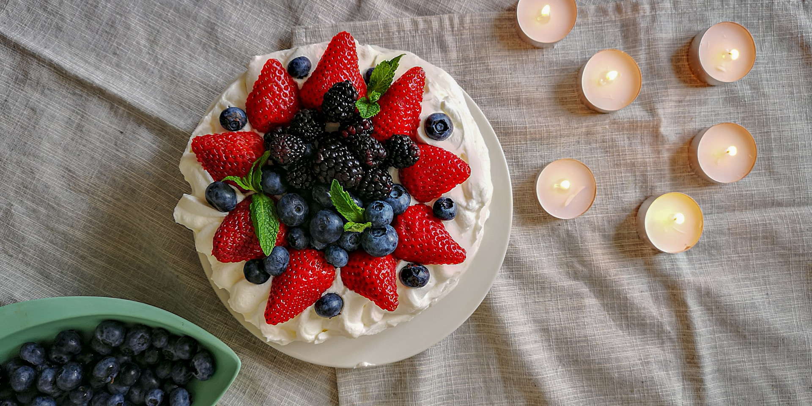

Strawberry Yogurt Cake
- Strawberry Yogurt Cake
- Blueberry Muffins
- Chocolate Chip Cookies
- 125ml (1/2 cup) yogurt
- 100g (1/2 cup) granulated sugar
- 60g (1/2 cup) brown sugar
- 3 eggs
- 95g (1/2 cup) ground almond
- 140g (1 cup) plain flour
- 2 teaspoons baking powder
- 125ml (1/2 cup) oil (I used olive oil)
- some strawberries, diced
Method:
- Pre-heat oven to 180 degC. Grease and line a 20cm round pan with baking paper.
- Mix yogurt, sugar, eggs in a large bowl.
- Add ground almonds and sieve over flour and baking powder. Mix till combined.
- Add oil and mix well.
- Fill 2/3 of the batter in the prepared pan, arrange diced strawberries on the batter and pour the rest of the remaining batter over the strawberries.
- Bake at 180 degC for 40-50mins or until a skewer inserted into the centre comes out clean.
- Let cool in the pan for 20mins before unmoulding.
